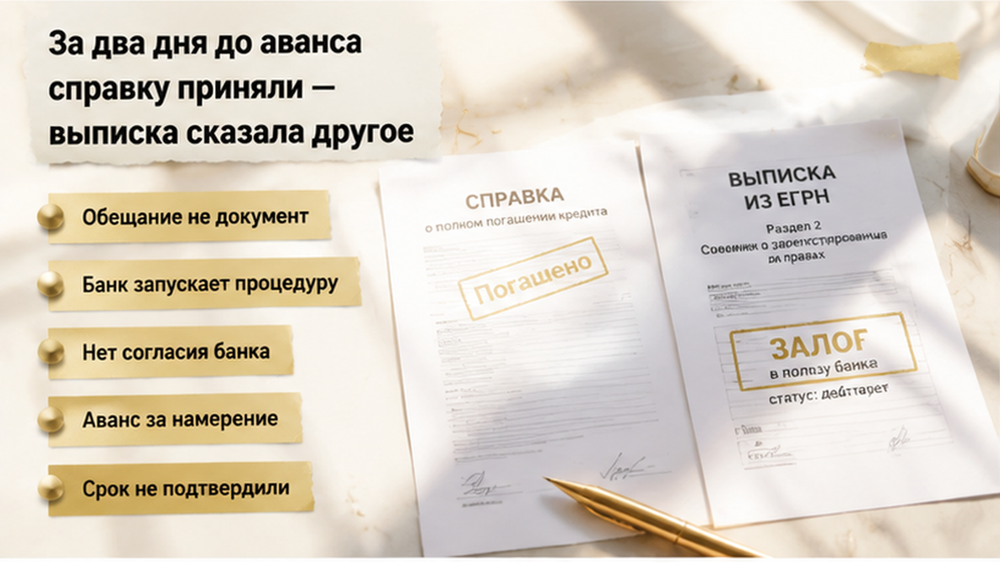
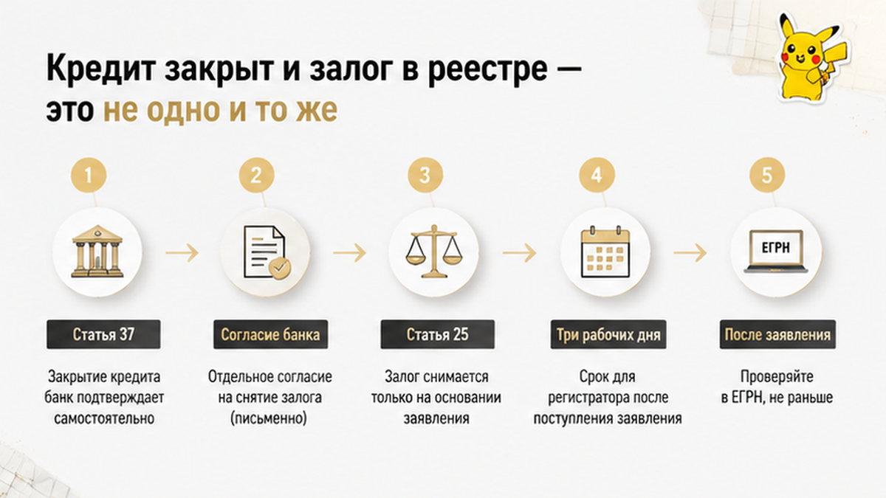
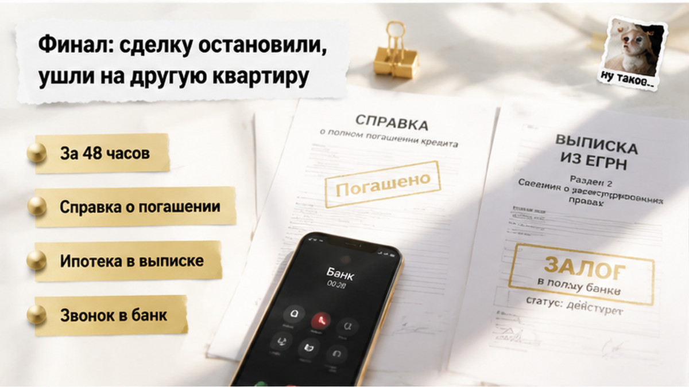
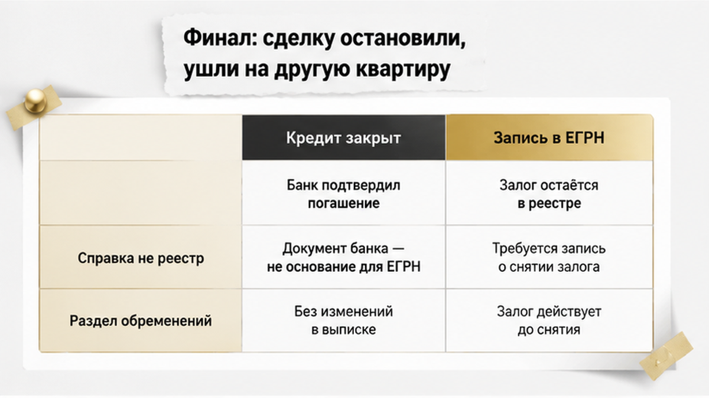
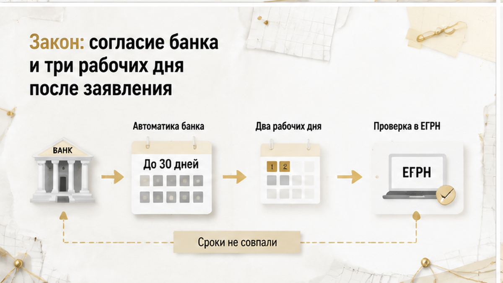
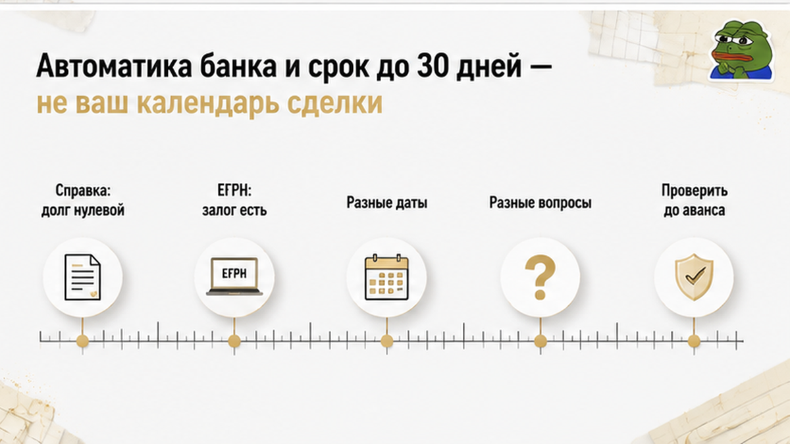

Сделка развалилась не в Росреестре и не на подписании — она развалилась в телефоне покупателя за двое суток до аванса. Семья в Тюмени уже выбрала вторичку, согласовала цену и дату, оставалось только внести деньги по авансовому соглашению. Продавец сам выложил на стол справку банка: кредит погашен, задолженности нет, — и добавил спокойное «обременение снимем прямо в день сделки». Покупатели всё равно заказали свежую выписку ЕГРН и параллельно позвонили в банк. В выписке ипотека продавца по-прежнему стояла в разделе ограничений, а банк не подтвердил ни срок снятия залога, ни письменное согласие на сделку. Аванс не внесли, ждать отказались и через неделю смотрели уже другую квартиру.
Август 2026-го, обычная тюменская вторичка и обычная же ошибка восприятия. Справка о закрытом кредите в руках продавца читается как «квартира чистая». А чистой её делает не справка — её делает отсутствие записи в реестре.
Я Святослав Шакин, The Риэлтор, Тюмень. Такие проверки делаю до аванса, а не после — и разбираю живые сделки, документы и молчание банков в своих каналах: Telegram и MAX. Подписывайтесь, если покупаете вторичку в Тюмени в ближайшие месяцы.

Хронология здесь важнее эмоций. Квартира на вторичке, раньше по ней была зарегистрирована ипотека продавца. Продавец ничего не прятал: кредит брал, кредит закрыл, справку о погашении и отсутствии задолженности принёс сам.
Дальше развилка, на которой рынок делится пополам. Одни на этом месте выдыхают: банк же написал чёрным по белому, долга нет. Другие за сутки-двое до денег заказывают свежую выписку ЕГРН — не ту, что собственник показывал месяц назад, а актуальную, на своё имя, ближе к дате расчётов.
Вторые в этой истории и оказались правы. В разделе об ограничениях и обременениях ипотека висела. Запись жила своей жизнью, отдельно от справки в руках продавца.
Потом был шаг, который пропускают чаще всего, — звонок в банк. Там не подтвердили ни готовность снять залог к нужной дате, ни формат; письменного согласия на сделку с заложенным объектом тоже не появилось. Продавцу назвали ориентир: недели две, может, четыре. Не потому что так велит закон, а потому что так устроен его конкретный внутренний процесс. Люди посчитали свою цепочку — и решили не ждать.
Казус привожу собирательным: без фамилий, адреса, названия банка и сумм. Важна механика, а не опознание участников. А механика в Тюмени повторяется с завидным постоянством и почти всегда в одной точке — за несколько дней до аванса, когда уйти ещё можно без потерь.

Разведу два процесса, потому что их склеивают почти всегда. Первый — отношения продавца с банком: кредитный договор, последний платёж, нулевой остаток, справка о погашении. Второй — состояние объекта в государственном реестре: регистрационная запись об ипотеке, которую внесли при выдаче кредита и которую нужно отдельно погасить.
Справка подтверждает первое. Документ честный, называть его «фейком» неправильно: обязательство перед банком действительно прекращено. Но второго она не подтверждает.
Реестр справки не читает. Он меняется только тогда, когда в орган регистрации прав поступает заявление и запись погашается. До этой минуты квартира формально остаётся заложенной — сколько бы нулей ни стояло в справке об остатке долга.
Вывод для покупателя скучный до зевоты: ключевой документ — не бумага продавца, а свежая выписка ЕГРН, заказанная вами незадолго до расчётов. Смотреть раздел ограничений и обременений. Стоит там ипотека — значит, она там есть, и устные конструкции про «да всё уже погашено» эту строку не отменяют. Одна строка в реестре умеет останавливать сделку целиком, даже когда деньги, одобрение и настроение у всех на месте.
И отдельно — тем, кто покупает без кредита и думает, что тема не про них. Она как раз про них. У наличного покупателя нет банка со стороны, который принудительно проверит объект перед выдачей денег. Проверять некому, кроме вас.
Фраза звучит убедительно, потому что она про действие. Не «когда-нибудь», а «в день сделки». Конкретно, по-деловому, с датой.
Только это обещание, а не документ. Продавец не снимает обременение сам — он зависит от процедуры, которую запускает банк: внутренняя проверка закрытия кредита, работа с закладной, сбор пакета, подача заявления в Росреестр. Ни на одном из этих шагов у покупателя нет ни рычага, ни календаря.
Обещание становится обсуждаемым только тогда, когда за ним стоит что-то проверяемое: подтверждённая банком схема сделки с заложенным объектом, письменное согласие залогодержателя, согласованный на бумаге порядок погашения записи и расчётов. Нет этого, а есть только уверенный тон — вы вносите аванс за намерение. Так это и стоит называть, без драматизации.
В тюменском казусе обещание разбилось о банальность: банк не подтвердил ни срок, ни формат. При этом продавец не врал и никого не разводил. Он просто не знал, сколько займёт его собственная процедура, и озвучил желаемое как факт. На рынке такое встречается куда чаще умысла: риск всплывает не потому, что его прятали, а потому, что его не проверяли до аванса.


Всё решилось за один вечер. Без криков, без юристов, без сцен в подъезде.
На столе у покупателей лежали две бумаги. Справка банка: кредит закрыт, задолженности нет. И свежая выписка ЕГРН, где в разделе ограничений спокойно стояла ипотека. Продавец не соврал ни в одном слове — он действительно рассчитался с банком. Просто реестр об этом ещё не знал.
Звонок в банк добил вопрос. Готовность снять залог к нужной дате и в нужном формате там не подтвердили. Письменного согласия на сделку с заложенным объектом на руках тоже не появилось. Осталось ровно то, что уже звучало на просмотре: «подадим, снимут, всё будет». Ориентир продавцу назвали мягкий — недели две, может, четыре.
Дальше — самое скучное и самое здоровое решение в этой истории. Аванс не внесли. Соглашение не подписали. Деньги никуда не ушли.
Через несколько дней семья вышла на другую квартиру — без ипотечной истории в реестре — и спокойно дошла до сделки.
Я специально не называю это разоблачением. Никто никого не обманывал. У сделки был свой срок, у банка — свой темп, и два календаря не совпали. Продавец потерял покупателя, готового платить деньгами и сейчас. Покупатели потеряли неделю поиска и стоимость одной выписки.
По меркам вторички это даром. Риск, который всплыл до аванса, стоит ровно столько, сколько стоит проверка. Тот же риск после аванса стоит уже других денег, других нервов и обычно другого лета.

Теперь по существу — почему бумага из банка вопрос не закрывает. Норм всего две, и обе стоит держать в голове, если покупаете вторичку с ипотечным прошлым.
Первая — статья 37 Федерального закона № 102-ФЗ «Об ипотеке (залоге недвижимости)». Отчуждение заложенного имущества допускается с согласия залогодержателя, если иное не предусмотрено договором. Перевожу: пока в ЕГРН стоит действующая ипотека, банк — участник вашей истории, а не сторонний зритель. Кредит не закрыт — нужна справка об остатке и согласованная с банком схема расчётов. Кредит закрыт, а запись жива — справка объясняет, почему обременение скоро уйдёт, но результат должен быть либо в реестре, либо в документально согласованной процедуре погашения записи.
Вторая — статья 25 того же закона. Регистрационная запись об ипотеке погашается в течение трёх рабочих дней с момента поступления заявления в орган регистрации прав.
Вот в этой строчке и живёт всё недопонимание рынка.
Три рабочих дня отсчитываются не от последнего платежа. Не от даты справки. Не от разговора с менеджером, который сказал «да всё уже, не переживайте». Они отсчитываются с момента, когда заявление физически поступило в Росреестр.
А всё, что происходит до подачи, в эти три дня не упаковано вообще. Внутренняя проверка закрытия кредита, работа с закладной, сбор пакета, постановка задачи в очередь — вопрос не статьи 25, а внутренних регламентов конкретного банка.
Поэтому «снимем в день сделки» юридически не гарантирует ничего. Фраза может оказаться чистой правдой — если заявление уже подано и запись вот-вот погасят. А может означать, что подача только планируется, и до чистой выписки лежит горизонт, который вам никто не подписывал.

Чтобы это не выглядело страшилкой риэлтора, возьму публичный пример.
Сбер описывает процедуру на своём сервисе Домклик (pledge.domclick.ru): после выплаты ипотеки банк направляет документы на снятие обременения автоматически, сам, без заявления от клиента. Хорошая новость, и правда удобно.
Теперь сроки. Статус запуска процедуры появляется в течение двух рабочих дней. Подготовка и передача документов в Росреестр — до тридцати дней. Проверять результат сервис предлагает ровно там же, где проверяли бы вы: в выписке ЕГРН, в разделе прав и ограничений.
Перечитайте медленно. Автоматически — не значит мгновенно.
Тридцать дней — верхняя граница у одного банка по одному сценарию, переносить цифру на всю страну я не предлагаю. Где-то быстрее, где-то документооборот устроен иначе. Но масштаб показателен: между «я всё выплатил» и «в реестре чисто» может лежать месяц, а не день.
А у вас календарь свой. Одобрение по ипотеке со сроком действия. Аванс. Съёмная квартира, из которой уже съезжаете. Школа с первого сентября. Машина с вещами. У банка продавца — своя очередь и свой регламент.
Никто эти две линии не синхронизирует по доброте душевной. Они совпадают только тогда, когда кто-то заранее об этом позаботился.
Отсюда правило, которое я в Тюмени повторяю до зубного скрежета: деньги не должны опережать статус залога. Обещание продавца — не обеспечение. Бумага с обязательством и реально переведённые деньги — вещи разного веса, и вес выясняется ровно тогда, когда что-то пошло не по плану.
Сведём всё к двум бумагам — тем самым, что лежали на столе у той семьи.
Справка банка закрывает вопрос денег: обязательство исполнено, долга нет. Выписка ЕГРН закрывает вопрос реестра: висит ли на квартире запись об ипотеке прямо сейчас. В спокойной сделке эти документы совпадают, и по отдельности на них никто не смотрит. В тюменском казусе они разошлись — ровно в те сутки, когда деньги уже собирались передавать.
| Вопрос покупателя | Справка банка о закрытии кредита | Выписка ЕГРН на дату аванса |
|---|---|---|
| Что подтверждает по существу | Прекращение задолженности продавца перед банком | Наличие или отсутствие записи об ипотеке на объекте |
| Кто выдаёт | Кредитор — сторона кредитного договора | Орган регистрации прав по объекту недвижимости |
| На какую дату работает | На дату выдачи справки продавцу | На дату формирования выписки покупателем |
| Где смотреть результат | Формулировка о нулевом остатке или отсутствии долга | Раздел об ограничениях прав и обременениях объекта |
| Что делать при расхождении | Уточнить у банка статус документов и согласие на сделку | Дождаться погашения записи или согласовать схему продажи заложенного объекта |
Практика из казуса собирается в четыре действия. Все — до денег, ни одного после.
Та же механика выручала и на других сюжетах: в Тюмени перед авансом всплывали обстоятельства, о которых продавец искренне не помнил. Документ, заказанный покупателем прямо перед сделкой, всегда сильнее любого пересказа.
Достаточно ли вам справки банка о закрытии кредита — или вы бы ждали свежую выписку ЕГРН без обременения? Напишите в комментариях, как поступили бы на месте той семьи.
Не понимаете, что именно смотреть в выписке перед авансом, — спросите до того, как назначена дата. Я на связи в Telegram и в MAX.
Осталось то, что проскакивают быстрее всего, — бумага, которую подписывают перед деньгами.
«Снимем обременение в день сделки» звучит как обязательство. Силы у этой фразы ровно столько, сколько её попало в текст соглашения. Нет условия о состоянии реестра к конкретной дате — спорить потом не о чем. Продавец скажет: кредит закрыл, справку показал, сроки регистрации от меня не зависят. И формально будет недалёк от истины: запись погашается в течение трёх рабочих дней после заявления, а момент подачи зависит не только от него.
Поэтому условие пишут как результат, а не как намерение. К согласованной дате продавец предоставляет выписку ЕГРН без записи об ипотеке — и до этой выписки деньги не двигаются. Там же оговариваются последствия, если результата к сроку нет. Автоматического возврата аванса в природе не существует: всё решает текст и то, задаток это или аванс по правовой природе. «В крайнем случае просто заберу свои деньги обратно» — самая дорогая иллюзия вторички, и истории про красиво написанные расписки заканчиваются именно этой фразой.
Отдельно про расчёты. Передать деньги, пока статус залога непонятен, — значит взять на себя чужой процесс. Кредит закрыт не полностью — согласие банка и схема расчётов делаются до аванса, а не параллельно ему. Кредит закрыт, но запись висит — дешевле сдвинуть дату на две-четыре недели, чем подписывать под честное слово.
Семья из казуса не выиграла суд и не возвращала деньги. Возвращать было нечего: они успели остановиться. Выписка за сутки до аванса сработала как ручка, за которую можно ухватиться и притормозить.
И главное. Вторичку с бывшей ипотекой в Тюмени покупают спокойно и постоянно — большинство таких сделок проходит ровно, потому что залог снимают заранее и к авансу приходят с чистой выпиской. Работает не подозрительность, а порядок: сначала реестр, потом деньги. Соблюли порядок — и снятое обременение вообще не становится историей.